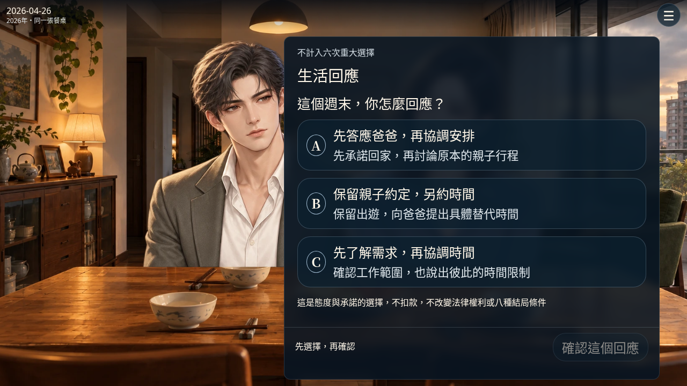

本輪只完成新版開場；原六次重大選擇、八結局、正式劇場存檔與State v4未更動。照顧選擇確認後停在示範結果，沒有扣款或傳送到正式周目。法律、稅務及保險效果仍待核實。
| 路線 | 不同後果 |
|---|---|
| A 先答應爸爸 | 爸爸安心；怡君在意先答應後協調，親子承諾仍待履行；醫院提醒不要包辦 |
| B 保留親子約定 | 爸爸備好手套等另約時間；怡君的約定被重視；醫院接受固定探望 |
| C 先確認需求 | 妹妹參與裝箱，時間到了仍有未完工作；醫院主動沿用分工；沒有保證全部解決 |
真實Chromium瀏覽器畫面，腳本逐次點擊，沒有後製加速。約五分鐘為安排的閱讀節奏，不是玩家閱讀時間實測。無配音，影片編碼24fps不代表正式角色動畫達24fps。
載入中

各種字級的台詞超出精簡字幕時，可按「閱讀全文」；不刪台詞或偷偷縮小文字。
88項Node測試通過；24組裝置／字級完成1296個對話節拍布局檢查。實際腳本操作到照顧選擇：A路線 285.8秒、B路線 285.8秒、C路線 287.0秒；含名字輸入及照顧確認的錄影約298秒。這是刻意安排的示範節奏，真人首讀時間尚待測量。
自動化結果：Node測試、瀏覽器路線與版面、續讀、隔離、特效與輸入補充、繁體中文與段末標點檢查、既有劇場檔案雜湊基準
桌面1440×900、筆電1366×768、平板820×1180/1180×820、手機390×844/844×390、工具列短高度844×300/568×260，全部100/125/150%。檢查正文24×倍率、姓名20×倍率、字幕與操作列不重疊、臉部安全區、選項可捲動與確認可點擊。
三條路線均測預設/自訂名字、對話續讀、草稿續讀、橫直切換不改位置、選擇雙擊防重複、第二輪未讀分支停止略過，並比較正式劇場/舊前言/State v4哨兵資料原樣不變。
| 項目 | 舊版 | 新版 |
|---|---|---|
| 內容 | 17節拍、82秒 | 30～45秒第一人稱獨白、家庭聚餐、一次生活回應、三條履約及醫院回扣 |
| 操作 | 自動或手動前言 | 手動逐句閱讀與選單暫停，不限時；已讀可略過 |
| 姓名 | 原角色姓名 | 每輪自訂名字，預設家安，標籤簡稱 |
| 保存 | 原獨立鍵 | 全新原型鍵，不匯入或寫入舊鍵 |
| 結束 | 示範照顧選擇 | 同一原版照顧選擇的確認預覽，不產生實際費用 |